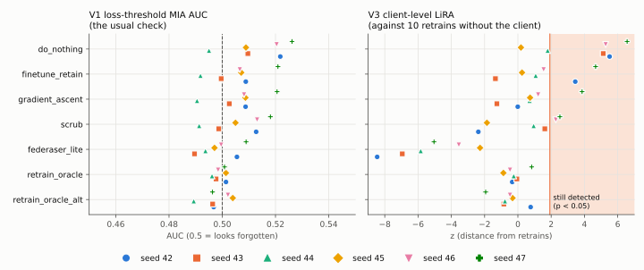
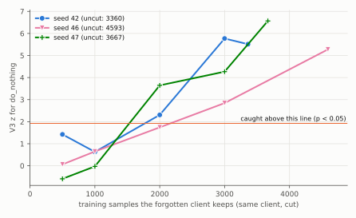
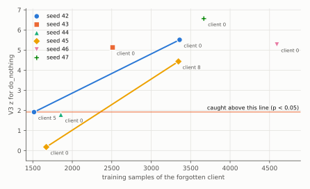
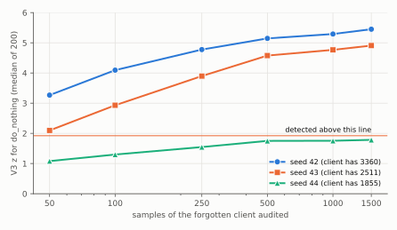
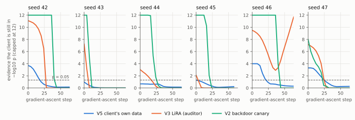

Can a server prove it forgot you?
In federated learning, many clients train one shared model without sharing their data. When a client asks to be forgotten, the server says it has "unlearned" them and shows a test as proof. This project audits those tests rather than the unlearning methods: it runs each one against a server that did nothing at all, against genuine retrains without the client, and against a dishonest server that tries to fake forgetting.
non-IID data
30 rounds
model
to be forgotten
judge 7 models
- Ten clients hold different slices of the data (Dirichlet α = 0.5). Each splits its own data at random into an in half it trains on and an out half it keeps private.
- FedAvg trains one shared model: 5 local epochs per round, 30 rounds (70 in the longer-trained runs).
- The result is the original model, which still contains client 0's influence.
- Client 0 asks to be forgotten. Seven "unlearning" outcomes are produced, including a server that does nothing, two genuine retrains, and a dishonest server.
- Five verifiers judge every model. A good verifier must catch the do-nothing server and pass the genuine retrains.
The problem
Why "prove you forgot me" is hard
Rules such as the GDPR's right to erasure have made "remove my data from your model" a real request. Retraining from scratch without the client is the gold standard, but it is expensive, so servers use cheaper unlearning methods and back them up with a test showing the client "can no longer be detected".
The catch: a test that says "not detected" is only proof if it would have said "detected" when nothing was removed. So the right question is not "does this method pass the test?" but "would the test have caught a server that did nothing?" This project asks exactly that, for five different tests.
How the audit works
Five verifiers, each run by a different party
Loss-threshold membership
Does the model's loss give the client away? Reported as AUC; 0.5 means "can't tell". The check most often reported for unlearning.
Backdoor canary
The client plants a secret trigger during training. Does it still work after unlearning? Exact McNemar test.
Client-level LiRA
Does the model look like ones trained with the client, or without? Compared against ten retrains without the client; Student-t prediction test.
Distance to oracle
How far is the model from a true retrain, compared with how far two retrains are from each other?
In/out permutation test
Is the model more confident on the half the client trained with than on the half it kept back? Needs only the client's own data.
The seven models every verifier judges
| Method | What it does | Should be |
|---|---|---|
do_nothing | Returns the original model. The negative control. | caught |
retrain_oracle, _alt | Retrain from scratch without the client, two seeds. The gold standard. | passed |
finetune_retain | Keep training on the remaining clients. | — |
gradient_ascent | Push the client's loss up (projected, early-stopped), then recover. | — |
scrub | Federated SCRUB (Kurmanji et al.). | — |
federaser_lite | FedEraser-style calibrated replay of stored updates. | — |
canary_suppressor | Dishonest. Never unlearns; reconstructs the trigger with Neural Cleanse and erases it. | caught |
Experiments
Five experiments, repeated across seeds, datasets, architectures and training lengths
Every method × every verifier
The main table: which checks catch the do-nothing server and pass the retrains.
Gradient ascent, step by step
Which signal disappears first as the client is pushed out of the model?
The dishonest server
Can a server that never unlearned get past the checks?
V5 power
How much client data the client-side test needs.
Attack strength
LiRA on subsets of the client's samples, without retraining.
| Setting | Model | Runs | Test accuracy |
|---|---|---|---|
| CIFAR-10, main | ResNet-20, 30 rounds | seeds 42–47 + 2 client swaps | 61–67% |
| CIFAR-10, controlled cuts | ResNet-20, 30 rounds | same client cut to 500–3000 samples, 3 seeds | 54–68% |
| CIFAR-10, longer training | ResNet-20, 70 rounds | seeds 42–44 | 76–79% |
| CIFAR-10, second architecture | VGG-11, 30 rounds | seeds 42–44 | 74–77% |
| PathMNIST (colon pathology) | ResNet-20, 30 rounds | seeds 42–47 | 79–82% |
All experiments ran on free Kaggle T4 GPUs. Seeds 42–44 were the original study; every later run used the same code after all design changes were made.
The usual check cannot tell "did nothing" from "retrained"
46 of 46 runs
V1, the loss-threshold membership AUC, reads between 0.489 and 0.526 for all seven models on all six CIFAR-10 seeds:
the server that did nothing (0.522, 0.510, 0.495, 0.509, 0.520, 0.526), every unlearning method, and both retrains (0.489–0.504).
The same holds on PathMNIST (0.496–0.517 for do_nothing), at 70 rounds (0.523–0.552) and on VGG-11 (0.525–0.539).
Across all 46 E0 and E3 runs, every model lies between 0.476 and 0.552.

LiRA separates them, and rarely accuses a genuine retrain
2 false alarms in 92 tests
V3, client-level LiRA judged against ten retrains without the client, on the main CIFAR-10 runs. Bold blue = detected at α = 0.05.
| seed 42 | seed 43 | seed 44 | seed 45 | seed 46 | seed 47 | |
|---|---|---|---|---|---|---|
| client size | 3360 | 2511 | 1855 | 1670 | 4593 | 3667 |
do_nothing | z 5.5, p 0.0003 | z 5.1, p 0.0004 | z 1.8, p 0.061 | z 0.2, p 0.43 | z 5.3, p 0.0004 | z 6.6, p < 0.0001 |
retrain_oracle | p 0.62 | p 0.52 | p 0.59 | p 0.79 | p 0.67 | p 0.23 |
retrain_oracle_alt | p 0.24 | p 0.78 | p 0.76 | p 0.62 | p 0.67 | p 0.95 |
Across every E0 and E3 run (both datasets, both architectures, all client sizes, both training lengths), the two retrains were tested 92 times. V3 flagged two, both on PathMNIST (p 0.030 and 0.017): 2.2%, below the 5% expected by chance. On CIFAR-10 it flagged none in 64.
What decides LiRA's verdict is how much data the client trained with
Controlled cuts: 0 / 6 detected at ≤1000 samples, 6 / 6 at ≥3000
Cutting the same client shows that size is the cause
The federation, the seed and every other client stay fixed; only the forgotten client's training data is cut to a random subset.
| client keeps | 500 | 1000 | 2000 | 3000 | all |
|---|---|---|---|---|---|
| seed 42 (all = 3360) | z 1.4 | z 0.6 | z 2.3, p 0.028 | z 5.8 | z 5.5 |
| seed 46 (all = 4593) | z 0.1 | z 0.7 | z 1.7, p 0.065 | z 2.8, p 0.012 | z 5.3 |
| seed 47 (all = 3667) | z −0.6 | z 0.0 | z 3.6, p 0.004 | z 4.3 | z 6.6 |

The natural clients agree. Across the eight main CIFAR-10 runs (six seeds and two client swaps), every forgotten client with at least 2511 samples was detected (5/5, z 4.4–6.6) and every client with at most 1855 was not (0/3). Swapping which client is forgotten in the same federation flips the verdict.

PathMNIST is weaker: none of its four small clients (793–1900 samples) was detected, and only one of its two large ones (3423 samples: z 3.3). Across both datasets, no client under 2000 samples was detected by ResNet-20 at 30 rounds (0/13).
Auditing more samples does not help
Rerunning V3 on random subsets of the client's samples (200 subsets per size): the evidence levels off by 250–500 samples on every seed.
| samples audited | 50 | 250 | 500 | 1500 |
|---|---|---|---|---|
| seed 42, median z | 3.3 | 4.8 | 5.2 | 5.5 |
| seed 43, median z | 2.1 | 3.9 | 4.6 | 4.9 |
| seed 44, median z | 1.1 | 1.6 | 1.8 | 1.8 |
| seed 45, median z | 0.2 | 0.2 | 0.2 | 0.2 |
| seed 46, median z | 4.5 | 5.0 | 5.1 | 5.2 |
| seed 47, median z | 4.7 | 6.0 | 6.4 | 6.5 |

A better-trained model is easier to audit, on either architecture
ResNet-20 at 70 rounds and VGG-11: do-nothing detected 6 / 6
Tuning showed the main runs' 61–67% accuracy was a training-budget limit, not capacity (90 rounds reached 79.4%; doubling the width did nothing). So three seeds were rerun at 70 rounds, and a second architecture, VGG-11, was trained on the same seeds.
| accuracy · V3 z · V5 p | seed 42 | seed 43 | seed 44 |
|---|---|---|---|
| client size | 3360 | 2511 | 1855 |
| ResNet-20, 30 rounds | 64.9% · 5.5 · 0.0002 | 63.9% · 5.1 · 0.10 | 67.1% · 1.8 · 0.59 |
| ResNet-20, 70 rounds | 77.5% · 8.6 · 0.0001 | 76.3% · 6.5 · 0.0001 | 78.7% · 3.2 · 0.0006 |
| VGG-11, 30 rounds | 74.0% · 7.9 · 0.0001 | 74.5% · 9.1 · 0.0002 | 76.5% · 3.9 · 0.002 |
Seed 44's 1855-sample client, too small for the main model, is detected by both better-trained models, by LiRA and by the client's own test. No retrain was flagged in these six runs, and V1 stayed blind (0.523–0.552).
Fine-tuning on the remaining clients is unreliable as forgetting
What LiRA says about the real unlearning methods, six CIFAR-10 seeds
finetune_retain
Keeps its accuracy, but still detected on seeds 42 and 47 (p 0.005, 0.0008).
gradient_ascent
Costs under 4 points of accuracy; detected on seed 47 only (p 0.003).
scrub
Detected on seeds 46 and 47 (p 0.03, 0.02).
federaser_lite
Never detected, but loses 11–22 points of accuracy. Forgetting by getting worse at everything is not the oracle.
The backdoor canary usually goes last, not first
10 of 14 runs, the opposite of what we expected
We expected a client's backdoor canary to be forgotten before its ordinary influence. Following gradient ascent step by step, this is the step at which each verifier first stops detecting the client:
| run | V5 (own data) | V3 (LiRA) | V2 (canary) |
|---|---|---|---|
| seed 42 | 20 | 28 | 44 (accuracy at chance) |
| seed 43 | never detected | 8 | 12 |
| seed 44 | never detected | 20 | 28 |
| seed 45 | 4 | 4 | 24 |
| seed 46 | 24 | never stops | 44 (accuracy at chance) |
| seed 47 | 28 | 28 | 24 (first) |
| seed 42, 70 rounds | 32 | 32 | 48 (accuracy at chance) |
| seed 43, 70 rounds | 12 | 16 | 24 |
| seed 44, 70 rounds | 28 | 36 | 40 (accuracy 10%) |
| PathMNIST 42 | never detected | never stops | 24 (first) |
| PathMNIST 43 | never detected | never stops | 40 (accuracy 14%) |
| PathMNIST 44 | never detected | 32 | 60 (accuracy 12%) |
| PathMNIST 46 | never detected | never detected | never stops |
| PathMNIST 47 | never detected | 48 | 52 (accuracy 9%) |

On PathMNIST seed 45 the canary could not be planted at all: the trigger sent inputs to the target class no more often than they went there without it, at both strengths tried. So E2 and E3 did not run for that seed.
A dishonest server beat each check at least once
No check caught it on all 14 runs
canary_suppressor never unlearns. It reconstructs the client's trigger with Neural Cleanse, using only its own data, and tries to erase the backdoor.
| run | NC found the class | V2 (canary) | V3 (LiRA) | V5 (own data) |
|---|---|---|---|---|
| seed 42 | no | caught p < 0.0001 | caught p < 0.0001 | p 0.048 |
| seed 43 | no | caught p 0.0003 | caught p < 0.0001 | p 0.27 |
| seed 44 | no | fooled p 0.97 | caught p 0.021 | p 0.30 |
| seed 45 | no | caught p < 0.0001 | caught p 0.018 | p 0.14 |
| seed 46 | yes | fooled p 1.00 | fooled p 0.15 | p 0.0003 |
| seed 47 | no | caught p 0.032 | caught p < 0.0001 | p 0.013 |
| seed 42, 70 rounds | no | caught p < 0.0001 | caught p < 0.0001 | p 0.0001 |
| seed 43, 70 rounds | no | fooled p 0.79 | caught p 0.0016 | p 0.045 |
| seed 44, 70 rounds | yes | caught p < 0.0001 | caught p < 0.0001 | p 0.055 |
| PathMNIST 42 | no | fires † | fooled p 0.59 | p 0.15 |
| PathMNIST 43 | no | fires † | fooled p 0.16 | p 0.37 |
| PathMNIST 44 | no | fires † | caught p < 0.0001 | p 0.038 |
| PathMNIST 46 | no | fires † | caught p 0.0022 | p 0.66 |
| PathMNIST 47 | yes | fires † | fooled p 0.45 | p 0.72 |
† On PathMNIST the canary check (p < 0.0001) also fires on genuine retrains, so there it cannot tell the dishonest server from an honest one.
At 70 rounds LiRA caught the suppressor on all three seeds, even where Neural Cleanse found the class: the better-trained model memorised the client too strongly to hide. On PathMNIST the suppressor got past LiRA on three of five seeds while keeping its accuracy.
A client can check on its own data only if it contributed a lot
The client-side in/out test (V5)
V5 needs nothing but the client's own data. On the main CIFAR-10 runs it detected do_nothing on seeds 42, 46 and 47
and not on 43, 44 or 45. Including client swaps, it caught every client with at least 3345 samples (4/4) and none with 2511 or fewer (0/4).
In the controlled cuts it caught every client kept at 2000 or more (6/6). It caught all three clients at 70 rounds and all three on VGG-11,
but none of the six on PathMNIST.
It flagged a genuine retrain once in 64 E0 tests. In E4, which subsamples the client's halves to a fixed size, it was not reliable at the sizes tested.
What it adds up to
The usual check is blind.
Loss-threshold membership AUC cannot tell a server that forgot from one that did nothing: both datasets, both architectures, both training lengths, 46 of 46 runs.
Strong checks have a price.
LiRA works with 2 false alarms in 92, but needs an auditor who can retrain without the client, and only works for clients that contributed enough data.
Canaries can be cheated.
They usually outlast other signals, but one couldn't be planted, a dishonest server got past them 3 times in 14, and they accused a genuine retrain 11 times in 28.
No single check is enough.
The dishonest server got past LiRA 4 times in 14 (never at 70 rounds). Nothing caught it on every run.
Built to be checked
- Every random draw is keyed by
(seed, purpose, round, client), and training is bitwise deterministic on a fixed device. - The report and figures are generated only from CSVs that match the ledger exactly; they are never edited by hand.
- Models use GroupNorm, not BatchNorm, so a model is a pure function of its weights and no membership signal leaks through running statistics.
- Superseded runs are kept, still verifiable, under
results/archive/.
Full write-up: FINDINGS.md · every number with the run it came from: RESULTS.md
Limits
- Two small image models (ResNet-20 and a slim VGG-11), one non-IID level (α = 0.5), two datasets.
- Most results are at 61–67% accuracy on CIFAR-10; the 70-round and VGG-11 runs show the main conclusions hold at 74–79%.
- The client-size thresholds (about 2000–2500 samples for LiRA with ResNet-20 at 30 rounds) depend on the setup and are not constants.
- The dishonest-server result is for one attacker (an adaptive Neural Cleanse variant).
- V3's score means little for a model that has collapsed to chance accuracy; read it together with test accuracy.
- V4 (distance to the oracle in weight space) is not informative here: two retrains differ from each other about as much as the original differs from either.
Reproduce
A one-minute CPU smoke run, then the full CIFAR-10 experiment on a GPU:
python -m venv .venv
.venv/Scripts/python -m pip install -r requirements.txt # Windows; use .venv/bin/python elsewhere
.venv/Scripts/python -m pytest
.venv/Scripts/python scripts/run_e0.py --config configs/smoke.yaml # ~1 min on CPU
.venv/Scripts/python scripts/run_e0.py --config configs/e0_sanity.yaml # CIFAR-10, GPUFrom a finished run, without a GPU:
python scripts/report.py # docs/RESULTS.md
python scripts/figures.py # docs/figures/*.svgThe other settings are config overrides of the main one: data.name=pathmnist, data.forget_size=1000,
fl.rounds=70, model.name=vgg11.